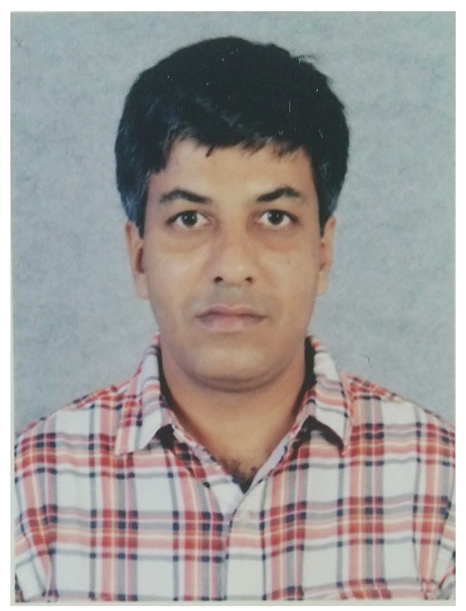

|  |
Dr. Swaminathan J Assistant Professor Department of Computer Science and Engineering Amrita School of Engineering, Amritapuri Campus Amrita Vishwa Vidyapeetham India |
Courses
1. Problem Solving using Programming
This course is about learning computer programming by problem solving. The course is broadly divided into three units. The essential constructs of C language (for problem solving) are introduced at the beginning of each unit really quick. This is followed by an extended duration of problem solving. To get started, 5 problems from code forces are selected and the incremental approach to solving them demostrated. Modularity is emphasized throughout. The students are encouraged to break the solution into functions rather than implement the entire logic in main. While it might seem unneccesary to define functions for really simple problems, the expectation is that students learn the art of developing programs as building blocks. How else does one apply modularity for large software unless he/she has learnt to apply it for smaller programs?
2. Object Oriented Programming
This is a course on object oriented programming using Java. The initial emphasis of the course is on object oriented paradigm with almost zero use of any Java libraries. All the major features of object orientation such as encapsulation, polymorphism, composition, inheritance, interface and exception handling, are introduced and wound around single application example to enable the learner to assimilate the underlying principles. In the second phase, the essential librarires of core Java such as math, string and file handling are introduced. In the final phase, advanced features such as generics, collections, swings, multi-threading, serialization and UML design notations are introduced. The students are strongly encouraged to design and implement a 1000-LOC project.
3. Data Structures and Algorithms
This course focuses on fundamental data structures including linked list, stack, queue, binary tree, binary heap, binary search tree, graphs disjoint sets and hash tables. The course emphasizes on incremental approach towards implementation and modularity. The treatment is object oriented and the language used is Java. Broadly, there are two goals to this course. The first one being implementing the data structures themselves. The second one is to determine the right data structure for a given problem and apply them. It is also important to develop the ability to design new data structures or variants of existing ones when required.
4. Design and Analysis of Algorithms
This is a standard course on algorithm design and analysis. The course starts with the need for efficient algorithms and methods to measure the efficiency in terms of time and space. This is followed by the introduction to asysmptotic notations, solving recurrences and Master's method. The next phase of the course moves to classical problems on algorithms and strategies to solve them such as divide-and-conquer, greedy and dynamic programming. The problems center around arrays, strings, trees and graphs. In the final phase, other strategies such as backtracking, branch-and-bound and problem-specific techniques are covered. The course ends with a short discussion on NP, NP-Hard and NP-Complete topics and reductions.